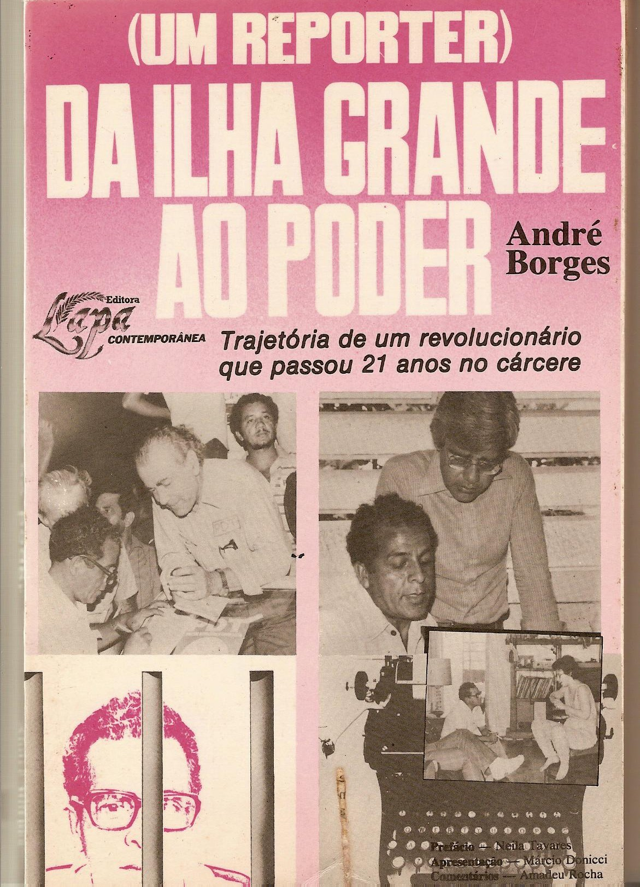
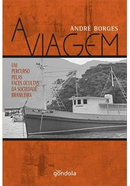

Livros
Da ilha grande ao poder
refere-se à reação das pessoas que o hostilizaram quando foi nomeado assessor do Diretor do Departamento do Sistema Penitenciário -DESIPE, no Governo Brizola. Diziam os mais atrasados que um ex-convicto não podia ocupar o cargo. Que era um absurdo colocar um homem como ele na direção do Orgão. Chegaram mesmo a identificá-lo com as organizações clandestinas de presos, tudo visando sua desmoralização pessoal e o desgaste político do Governo recém-eleito. Agora vejo-o em mais essa empreitada, sempre com conotação política, alem da óbvia visão de futuro, esperando mostrar com este livro sua visão de mundo jornalista, tirando de suas matéroas e entrevistas uma postura dialética da sociedade que, atravéz de suas firmes convicções e com seus companheiros, pretende mudar.
- Márcio Donnici (1984)
Eterno Amanhã
A poesia de André Borges encaixa-se nas preocupações de Bachelard e, se não alcança o primado da forma, suas fimbrias são nitidamente sonoras e profundamente doloridas como doem os melhores poemas. "Regressarei à vida - diz André - onde me espera a luta / no corpo / levo o execrável / estigma das grades / no coração / uma esperança nova / na alma / uma paixão que arde: / - Liberdade! Liberdade"!
- José louzeiro
A Fuga

essa historia é uma tentativa de sintetizar o que foi a ditadura de 1964 que muitas pessoas principalmente a juventude desconhece. então esse livro narra alguns dos episodios que ocorreram lá
A viagem
Conheci o André militante, escritor e poeta, com admiração. Mas fui conhecê-lo de verdade quando nos tornamos companheiros e amigos na luta contra o racismo participando do Círculo Palmarino. Desta vez uma amizade construída não apenas atravéz da política, mas nas conversas nos bares da Cinelândia, nos passeios noturnos admirando a lua cheia na Lapa, tomando sopa e vinho nos diversos bares do Centro.
- Iná Meireles